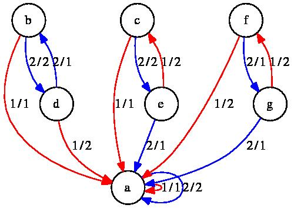

MealyMachines and MealyElements
Mealy machines form a special class of FR machines. They have as stateset a finite set, as opposed to a free group/monoid/semigroup. All commands available for FR machines are also available for Mealy machines, but the latter have added functionality.
There are currently two types of Mealy machines; one has as stateset an interval of integers of the form [1..m] and as alphabet a set of integers; the other has an arbitrary domain as stateset and alphabet. Almost no functionality is implemented for the latter type, but there is a function converting it to the former type (see AsMealyMachine (5.2-18)).
The internal representation of a Mealy machine of the first kind is quite different from that of FR machines. The alphabet is assumed to be an interval [1..n], and the stateset is assumed to be an interval [1..m]. The transitions are stored as a m × n matrix, and the outputs are stored in a list of length m, consisting of permutations or transformations.
Mealy machines have additional properties, in particular they can act on periodic sequences (see PeriodicList (11.2-2)). For example, the periodic sequence PeriodicList([1],[1,2]) describes the infinite ray [1,1,2,1,2,..] in the tree. In principle, Mealy machines could act on sequences accepted by an automaton, although this is not yet implemented.
Mealy elements are Mealy machines with an initial state. For efficiency reasons, Mealy elements are always minimized, and their states are ordered in a canonical top-down, left-to-right order of traversal of the tree. In particular, their initial state is always 1. In this implementation, multiplication of Mealy elements is slower than multiplication of group FR elements, while comparison of Mealy elements is faster than comparison of group FR elements. In practise, it is better to work with Mealy elements as often as possible.
Products of Mealy machines behave in the same way as products of general FR machines, see 3.2. The only difference is that now the sum and products of statesets are distinct; the sum of statesets being their disjoint union, and their product being their cartesian product.
Sometimes one would like to know how a Mealy element was obtained as a word in Mealy elements. This is possible within the representation IsFRMealyElement (10.2-12), which combines the representations IsMealyElement (10.2-4) and IsFRElement (10.2-11). On top of usual FR elements, they have an attribute UnderlyingMealyMachine, which is used for faster comparison of elements, and computation of the action.
Therefore, if L is a list of FR elements, the call List(L,UnderlyingElement);; will set these attributes, and all calculations made with elements of L will use and propagate the attributes. FR-Mealy elements are displayed in the form <d|w|n>, where d is the degree of the alphabet, w is a word in the stateset, and n is the number of states of the underlying Mealy element.
MealyMachines and MealyElements‣ MealyMachine( [alphabet, ]transitions, output ) | ( operation ) |
‣ MealyElement( [alphabet, ]transitions, output, init ) | ( operation ) |
Returns: A new Mealy machine/element.
This function constructs a new Mealy machine or element, of integer type.
transitions is a list of lists; transitions[s][x] is an integer, which is the state reached by the machine when started in state s and fed input x.
output is a list; at position s it contains a permutation, a transformation describing the activity of state s, or a list describing the images of the transformation.
alphabet is an optional domain given as first argument; When present, it is assumed to be a finite domain, mapped bijectively to [1..n] by its enumerator. The indices "[s]" above are then understood with respect to this enumeration.
init is an integer describing the initial state the newly created Mealy element should be in.
gap> b := MealyMachine([[3,2],[3,1],[3,3]],[(1,2),(),()]); <Mealy machine on alphabet [ 1, 2 ] with 3 states> gap> Display(b); | 1 2 ---+-----+-----+ a | c,2 b,1 b | c,1 a,2 c | c,1 c,2 ---+-----+-----+ gap> n := MealyMachine(Domain([11,12]),[[3,2],[3,1],[3,3]],[(1,2),(),()]); <Mealy machine on alphabet [ 11, 12 ] with states [ 1 .. 3 ]> gap> Display(n); | 11 12 ---+------+------+ a | c,12 b,11 b | c,11 a,12 c | c,11 c,12 ---+------+------+
gap> tau := MealyElement([[2,1],[2,2]],[(1,2),()],1); <Mealy machine on alphabet [ 1, 2 ] with 2 states, initial state 1> gap> Display(tau); | 1 2 ---+-----+-----+ a | b,2 a,1 b | b,1 b,2 ---+-----+-----+ Initial state: a gap> [1,1]^tau; [[1]]^tau; [[2]]^tau; [ 2, 1 ] [ 2, [ 1 ] ] [ [ 1 ] ]
‣ MealyMachine( stateset, alphabet, transitions, output ) | ( operation ) |
‣ MealyElement( stateset, alphabet, transitions, output, init ) | ( operation ) |
Returns: A new Mealy machine/element.
This function constructs a new Mealy machine or element, of domain type.
stateset and alphabet are domains; they are not necessarily finite.
transitions is a function; it takes as arguments a state and an alphabet letter, and returns a state.
output is either a function, accepting as arguments a state and a letter, and returning a letter.
init is an element of stateset describing the initial state the newly created Mealy element should be in.
gap> g := Group((1,2));; n := MealyMachine(g,g,\*,\*); <Mealy machine on alphabet [ (), (1,2) ] with states Group( [ (1,2) ] )> gap> [(1,2),()]^FRElement(n,()); [ (1,2), (1,2) ] gap> a := MealyElement(g,g,\*,\*,()); <Mealy machine on alphabet [ (), (1,2) ] with states Group( [ (1,2) ] ), initial state ()> gap> [(1,2),()]^a; [ (1,2), (1,2) ]
‣ MealyMachineNC( fam, transitions, output ) | ( operation ) |
‣ MealyElementNC( fam, transitions, output, init ) | ( operation ) |
Returns: A new Mealy machine/element.
This function constructs a new Mealy machine or element, of integer type. No tests are performed to check that the arguments contain values within bounds, or even of the right type (beyond the simple checking performed by GAP's method selection algorithms). In particular, Mealy elements are always assumed to be minimized, but these functions leave this task to the user.
fam is the family to which the newly created Mealy machine will belong.
transitions is a list of lists; transitions[s][x] is an integer, which is the state reached by the machine when started in state s and fed input x.
output is a list; at position s it contains a permutation or a transformation describing the activity of state s.
init is an integer describing the initial state the newly created Mealy element should be in.
gap> taum := MealyMachine([[2,1],[2,2]],[(1,2),()]); <Mealy machine on alphabet [ 1, 2 ] with 2 states> gap> tauminv := MealyMachineNC(FamilyObj(taum),[[1,2],[2,2]],[(1,2),()]); <Mealy machine on alphabet [ 1, 2 ] with 2 states> gap> tau := MealyElement([[2,1],[2,2]],[(1,2),()],1); <Mealy machine on alphabet [ 1, 2 ] with 2 states, initial state 1> gap> tauinv := MealyElementNC(FamilyObj(n),[[1,2],[2,2]],[(1,2),()],1); <Mealy machine on alphabet [ 1, 2 ] with 2 states, initial state 1> gap> tau=FRElement(taum,1); tauinv=FRElement(tauminv,1); true true gap> IsOne(tau*tauinv); true
‣ AllMealyMachines( m, n[, filters] ) | ( function ) |
Returns: A list of all Mealy machines with specified properties.
This function constructs all Mealy machines with alphabet [1..m], stateset [1..n] and specified properties.
These properties are specified as additional arguments. They can include IsInvertible (10.2-15), IsReversible (5.2-4), IsBireversible (5.2-7), and IsMinimized (5.2-5) to specify that the machines should have that property.
A group/monoid/semigroup p may also be passed as argument; this specifies the allowable vertex transformations of the machines. The property IsTransitive requires that the state-closed group/monoid/semigroup of the machine act transitively on its alphabet, and IsSurjective requires that its VertexTransformationsFRMachine (5.2-15) be precisely equal to p.
The argument EquivalenceClasses returns one isomorphism class of Mealy machine, under the permutations of the stateset and alphabet.
The argument InverseClasses returns one isomorphism class of Mealy machine under inversion of the stateset.
The following example constructs the two Mealy machines AleshinMachine (9.1-15) and BabyAleshinMachine (9.1-16):
gap> l := AllMealyMachines(2,3,IsBireversible,IsSurjective,EquivalenceClasses);; gap> Length(l); 20 gap> Filtered(l,x->VertexTransformationsFRMachine(DualMachine(x))=SymmetricGroup(3) > and Size(StateSet(Minimized(x)))=3); [ <Mealy machine on alphabet [ 1, 2 ] with 3 states>, <Mealy machine on alphabet [ 1, 2 ] with 3 states> ] gap> Display(last[1]); | 1 2 ---+-----+-----+ a | a,1 b,2 b | c,2 c,1 c | b,1 a,2 ---+-----+-----+ gap> Display(last[2]); | 1 2 ---+-----+-----+ a | a,2 b,1 b | c,1 c,2 c | b,2 a,1 ---+-----+-----+
MealyMachines and MealyElements‣ Draw( m[, filename] ) | ( operation ) |
This function creates a graph description of the Mealy machine/element m. If a second argument filename is present, the graph is saved, in dot format, under that filename; otherwise it is converted to Postscript using the program dot from the graphviz package, and is displayed in a separate X window using the program display or rsvg-view. This works on UNIX systems.
It is assumed, but not checked, that graphviz and display/rsvg-view are properly installed on the system. The option usesvg requests the use of rsvg-view; by default, display is used.
A circle is displayed for every state of m, and there is an edge for every transition in m. It has label of the form x/y, where x is the input symbol and y is the corresponding output. Edges are coloured according to the input symbol, in the order "red", "blue", "green", "gray", "yellow", "cyan", "orange", "purple". If m has an initial state, it is indicated as a doubly circled state.
If m is a FR machine, Draw first attempts to convert it to a Mealy machine (see AsMealyMachine (5.2-18)).
The optional value "detach" detaches the drawing subprocess after it is started, in the syntax Draw(M:detach).
It is assumed that graphviz and display/rsvg-view are properly installed on the system. The option usesvg requests the use of rsvg-view; by default, display is used.
For example, the command Draw(NucleusMachine(BasilicaGroup)); produces (in a new window) the following picture: 
‣ Minimized( m ) | ( operation ) |
Returns: A minimized machine equivalent to m.
This function contructs the minimized Mealy machine r corresponding to m, by identifying isomorphic states; and, if m is initial, by removing inaccessible states.
If m is initial, the minimized automaton is such that its states are numbered first by distance to the initial state, and then lexicographically by input letter. (in particular, the initial state is 1). This makes comparison of minimized automata efficient.
Furthermore, Correspondence(r) is a list describing, for each (accessible) state of m, its corresponding state in r; see Correspondence (3.5-12).
gap> GrigorchukMachine := MealyMachine([[2,3],[4,4],[2,5],[4,4],[4,1]], [(),(1,2),(),(),()]); <Mealy machine on alphabet [ 1, 2 ] with 5 states> gap> g2 := GrigorchukMachine^2; <Mealy machine on alphabet [ 1, 2 ] with 25 states> gap> Minimized(g2); <Mealy machine on alphabet [ 1, 2 ] with 11 states, minimized> gap> Correspondence(last); [ 2, 1, 4, 11, 9, 1, 2, 5, 7, 6, 4, 3, 2, 9, 11, 11, 10, 9, 2, 4, 9, 8, 11, 4, 2 ] gap> e := FRElement(g2,11); <Mealy element on alphabet [ 1, 2 ] with 25 states, initial state 11> gap> Minimized(e); <Mealy element on alphabet [ 1, 2 ] with 5 states, initial state 1, minimized> gap> Correspondence(last); [ 3, 2, 1, 4, 5, 2, 3,,,, 1,, 3, 5, 4, 4,, 5, 3, 1, 5,, 4, 1, 3 ]
‣ DualMachine( m ) | ( operation ) |
Returns: The dual Mealy machine of m.
This function constructs the dual machine of m, i.e. the machine with stateset the alphabet of m, with alphabet the stateset of m, and similarly with transitions and output switched.
gap> b := MealyMachine([[3,2],[3,1],[3,3]],[(1,2),(),()]); <Mealy machine on alphabet [ 1, 2 ] with 3 states> gap> d := DualMachine(b)^4); <Mealy machine on alphabet [ 1, 2, 3 ] with 16 states> gap> Draw(d); # action on 2^4 points gap> DualMachine(d); <Mealy machine on alphabet [ 1, 2, 3, 4, 5, 6, 7, 8, 9, 10, 11, 12, 13, 14, 15, 16 ] with 3 states> gap> Output(last,1)=Activity(FRElement(b,1),4); true
‣ IsReversible( m ) | ( property ) |
Returns: true if m is a reversible Mealy machine.
This function tests whether m is reversible, i.e. whether the DualMachine (5.2-3) of m is invertible. See [MNS00] for more details.
gap> IsReversible(MealyMachine([[1,2],[2,2]],[(1,2),()])); false gap> IsReversible(MealyMachine([[1,2],[2,1]],[(),(1,2)]));
‣ IsMinimized( m ) | ( property ) |
Returns: true if m is a minimized Mealy machine.
This function tests whether m is minimized, i.e. whether nono of its states can be removed or coalesced. All Mealy elements are automatically minimized.
gap> AllMealyMachines(2, 2, IsBireversible,EquivalenceClasses); [ <Mealy machine on alphabet [ 1, 2 ] with 2 states>, <Mealy machine on alphabet [ 1, 2 ] with 2 states>, <Mealy machine on alphabet [ 1, 2 ] with 2 states>, <Mealy machine on alphabet [ 1, 2 ] with 2 states>, <Mealy machine on alphabet [ 1, 2 ] with 2 states>, <Mealy machine on alphabet [ 1, 2 ] with 2 states>, <Mealy machine on alphabet [ 1, 2 ] with 2 states>, <Mealy machine on alphabet [ 1, 2 ] with 2 states> ] gap> List(last,IsMinimized); [ false, true, false, false, false, false, true, false ]
‣ AlphabetInvolution( m ) | ( attribute ) |
Returns: A list giving, for each alphabet letter, its inverse.
If m is a bireversible machine, it may happen that the stateset of the dual of m (see DualMachine (5.2-3)) is closed under taking inverses. If this happens, then this list records the mapping from an alphabet letter of m to its inverse.
gap> m := GammaPQMachine(3,5);; AlphabetOfFRObject(m); [ 1 .. 6 ] gap> IsBireversible(m); AlphabetInvolution(GammaPQMachine(3,5)); true [ 6, 5, 4, 3, 2, 1 ]
‣ IsBireversible( m ) | ( property ) |
Returns: true if m is a bireversible Mealy machine.
This function tests whether m is bireversible, i.e. whether all eight machines obtained from m using DualMachine (5.2-3) and Inverse are well-defined. See [MNS00] for more details.
gap> IsBireversible(MealyMachine([[1,2],[2,1]],[(),(1,2)])); false gap> IsBireversible(MealyMachine([[1,1],[2,2]],[(),(1,2)])); true
‣ StateGrowth( m[, x] ) | ( operation ) |
Returns: The state growth of the Mealy machine or element m.
This function computes, as a rational function, the power series in x whose coefficient of degree n is the number of non-trivial states at level n of the tree.
If x is absent, it is assumed to be Indeterminate(Rationals).
If m is a Mealy machine, this function is computed with respect to all possible starting states. If m is a Mealy element, this function is computed with respect to the initial state of m.
gap> b := MealyMachine([[3,2],[3,1],[3,3]],[(1,2),(),()]); <Mealy machine on alphabet [ 1, 2 ] with 3 states> gap> StateGrowth(b,Indeterminate(Rationals)); (2)/(-x_1+1) gap> StateGrowth(FRElement(b,1),Indeterminate(Rationals)); (1)/(-x_1+1)
‣ Degree( m ) | ( operation ) |
‣ DegreeOfFRMachine( m ) | ( operation ) |
‣ DegreeOfFRElement( m ) | ( operation ) |
Returns: The growth degree of the Mealy machine or element m.
This function computes the order of the pole at x=1 of StateGrowth(m,x), in case its denominator is a product of cyclotomics; and returns infinity otherwise.
This attribute of Mealy machines was studied inter alia in [Sid00].
gap> m := MealyMachine([[2,1],[3,2],[3,3]],[(),(1,2),()]); <Mealy machine on alphabet [ 1, 2 ] with 3 states> gap> StateGrowth(m,Indeterminate(Rationals)); (-x_1+2)/(x_1^2-2*x_1+1) gap> List(StateSet(m),i->Degree(FRElement(m,i))); [ 2, 1, -1 ] gap> a := MealyMachine(Group((1,2)),Group((1,2)),\*,\*); <Mealy machine on alphabet [ (), (1,2) ] with states Group( [ (1,2) ] )> gap> Degree(a); infinity
‣ IsFinitaryFRElement( e ) | ( property ) |
‣ IsFinitaryFRMachine( e ) | ( property ) |
Returns: true if e is a finitary element.
This function tests whether e is a finitary element. These are by definition the elements of growth degree at most 0.
When applied to a Mealy machine, it returns true if all states of e are finitary.
gap> m := GuptaSidkiMachines(3);; Display(m); | 1 2 3 ---+-----+-----+-----+ a | a,1 a,2 a,3 b | a,2 a,3 a,1 c | a,3 a,1 a,2 d | b,1 c,2 d,3 ---+-----+-----+-----+ gap> Filtered(StateSet(m),i->IsFinitaryFRElement(FRElement(m,i))); [ 1, 2, 3 ] gap> IsFinitaryFRElement(m); false
‣ Depth( m ) | ( attribute ) |
‣ DepthOfFRMachine( m ) | ( attribute ) |
‣ DepthOfFRElement( m ) | ( attribute ) |
Returns: The depth of the finitary Mealy machine or element m.
This function computes the maximal level at which the m has an non-trivial state. In particular the identity has depth 0, and FR elements acting only at the root vertex have depth 1. The value infinity is returned if m is not finitary (see IsFinitaryFRElement (5.2-10)).
gap> m := MealyMachine([[2,1],[3,3],[4,4],[4,4]],[(),(),(1,2),()]); <Mealy machine on alphabet [ 1, 2 ] with 4 states> gap> DepthOfFRMachine(m); infinity gap> List(StateSet(m),i->DepthOfFRElement(FRElement(m,i))); [ infinity, 2, 1, 0 ]
‣ IsBoundedFRElement( e ) | ( property ) |
‣ IsBoundedFRMachine( e ) | ( property ) |
Returns: true if e is a finitary element.
This function tests whether e is a bounded element. These are by definition the elements of growth degree at most 1.
When applied to a Mealy machine, it returns true if all states of e are bounded.
gap> m := GuptaSidkiMachines(3);; Display(m); | 1 2 3 ---+-----+-----+-----+ a | a,1 a,2 a,3 b | a,2 a,3 a,1 c | a,3 a,1 a,2 d | b,1 c,2 d,3 ---+-----+-----+-----+ gap> Filtered(StateSet(m),i->IsBoundedFRElement(FRElement(m,i))); [ 1, 2, 3, 4 ] gap> IsBoundedFRMachine(m); true
‣ IsPolynomialGrowthFRElement( e ) | ( property ) |
‣ IsPolynomialGrowthFRMachine( e ) | ( property ) |
Returns: true if e is an element of polynomial growth.
This function tests whether e is a polynomial element. These are by definition the elements of polynomial growth degree.
When applied to a Mealy machine, it returns true if all states of e are of polynomial growth.
gap> m := GuptaSidkiMachines(3);; Display(m); | 1 2 3 ---+-----+-----+-----+ a | a,1 a,2 a,3 b | a,2 a,3 a,1 c | a,3 a,1 a,2 d | b,1 c,2 d,3 ---+-----+-----+-----+ gap> Filtered(StateSet(m),i->IsPolynomialGrowthFRElement(FRElement(m,i))); [ 1, 2, 3, 4 ] gap> IsPolynomialGrowthFRMachine(m); true
‣ Signatures( e ) | ( operation ) |
Returns: A list describing the product of the activities on each level.
This function computes the product of the activities of e on each level, and returns a periodic list describing it (see PeriodicList (11.2-2)).
The entries pi are permutations, and their values are meaningful only when projected in the abelianization of VertexTransformationsFRElement(e).
gap> Signatures(GrigorchukGroup.1); [ (1,2), / () ] gap> Signatures(GrigorchukGroup.2); [/ (), (1,2), (1,2) ] gap> last[50]; (1,2) gap> Signatures(AddingMachine(3)[2]); [/ (1,2,3) ]
‣ VertexTransformationsFRMachine( m ) | ( operation ) |
‣ VertexTransformationsFRElement( e ) | ( operation ) |
Returns: The group/monoid generated by all vertex transformations of states of m.
The first function computes the finite permutation group / transformation monoid generated by all outputs of states of m.
The second command is a short-hand for VertexTransformationsFRMachine(UnderlyingFRMachine(e)).
gap> m := MealyMachine([[1,3,2],[3,2,1],[2,1,3]],[(2,3),(1,3),(1,2)]); <Mealy machine on alphabet [ 1, 2 ] with 3 states> gap> VertexTransformationsFRMachine(m); Group([ (2,3), (1,3), (1,2) ])
‣ FixedRay( e ) | ( operation ) |
Returns: The lexicographically first ray fixed by e.
This function computes the lexicographically first infinite sequence that is fixed by the FR element e, and returns it as a periodic list (see PeriodicList (11.2-2)). It returns fail if no such ray exists.
gap> m := MealyMachine([[1,3,2],[3,2,1],[2,1,3]],[(2,3),(1,3),(1,2)]); <Mealy machine on alphabet [ 1, 2 ] with 3 states> gap> FixedRay(FRElement(m,1)); [/ 1 ] gap> last^FRElement(m,1); [/ 1 ] gap> FixedRay(FRElement(m,[1,2])); fail
‣ IsLevelTransitive( e ) | ( property ) |
Returns: true if e acts transitively on each level of the tree.
This function tests whether e acts transitively on each level of the tree. It is implemented only if VertexTransformationsFRElement(e) is abelian.
This function is used as a simple test to detect whether an element has infinite order: if e has a fixed vertex v such that the State(e,v) is level-transitive, then e has infinite order.
gap> m := AddingMachine(3);; Display(m); | 1 2 3 ---+-----+-----+-----+ a | a,1 a,2 a,3 b | a,2 a,3 b,1 ---+-----+-----+-----+ Initial state: b gap> IsLevelTransitive(m); true gap> IsLevelTransitive(Product(UnderlyingFRMachine(GrigorchukOverGroup){[2..5]})); true
‣ AsMealyMachine( m ) | ( attribute ) |
Returns: A Mealy machine isomorphic to m.
This function constructs a Mealy machine r, which is as close as possible to the FR machine m. Furthermore, Correspondence(r) is a list identifying, for every generator of the stateset of m, a corresponding state in the new Mealy machine; see Correspondence (3.5-12).
m may be a group/monoid/semigroup FR machine, or a Mealy machine; in which case the result is returned unchanged.
In particular, FRElement(m,s) and FRElement(AsMealyMachine(m),s) return the same tree automorphism, for any FR machine m and any state s.
This function is not guaranteed to return; if m does not have finite states, then it will loop forever.
gap> n := FRMachine(["tau","mu"],[[[],[1]],[[],[-2]]],[(1,2),(1,2)]); <FR machine with alphabet [ 1 .. 2 ] on Group( [ tau, mu ] )> gap> Display(n); | 1 2 -----+--------+---------+ tau | <id>,2 tau,1 mu | <id>,2 mu^-1,1 -----+--------+---------+ gap> AsMealyMachine(n); <Mealy machine on alphabet [ 1, 2 ] with 4 states> gap> Display(last); | 1 2 ---+-----+-----+ a | c,2 a,1 b | c,2 d,1 c | c,1 c,2 d | b,2 c,1 ---+-----+-----+ gap> Correspondence(last); [ 1, 2 ]
‣ AsMealyMachine( l ) | ( attribute ) |
Returns: A Mealy machine constructed out of the FR elements in l.
This function constructs a Mealy machine r, with states l (which must be a state-closed set). Its outputs are the outputs of its elements, and its transitions are the transitions of its elements; in particular, FRElement(r,i) is equal to l[i] as an FR element.
Correspondence(r) records the argument l.
This function returns fail if l is not state-closed.
gap> mu := FRElement([[[],[-1]]],[(1,2)],[1]); <2|f1> gap> gap> States(mu); [ <2|f1>, <2|identity ...>, <2|f1^-1> ] gap> AsMealyMachine(last); <Mealy machine on alphabet [ 1, 2 ] with 3 states> gap> Display(last); | 1 2 ---+-----+-----+ a | b,2 c,1 b | b,1 b,2 c | a,2 b,1 ---+-----+-----+
‣ AsMealyElement( m ) | ( attribute ) |
Returns: A Mealy element isomorphic to m.
This function constructs a Mealy element, which induces the same tree automorphism as the FR element m.
m may be a group/monoid/semigroup FR element, or a Mealy element; in which case the result is returned unchanged.
This function is not guaranteed to return; if m does not have finite states, then it will loop forever.
gap> mu := FRElement([[[],[-1]]],[(1,2)],[1]); <2|f1> gap> AsMealyElement(mu); <Mealy machine on alphabet [ 1, 2 ] with 3 states, initial state 1> gap> [[2,1]]^last; [ [ 1, 2 ] ] gap> [2,1,2,1]^mu; [ 1, 2, 1, 2 ]
‣ AsIntMealyMachine( m ) | ( attribute ) |
‣ AsIntMealyElement( m ) | ( attribute ) |
Returns: A Mealy machine in integer format, isomorphic to m.
This function constructs a Mealy machine r, which has similar behaviour as m while having stateset [1..n] for some natural n. Most FR commands operate efficiently only on Mealy machines of this type.
This function is not guaranteed to return; if m does not have finite states, then it will loop forever.
gap> g := Group((1,2));; n := MealyMachine(g,g,\*,\*); <Mealy machine on alphabet [ (), (1,2) ] with states Group( [ (1,2) ] )> gap> Display(n); | () (1,2) -------+-------------+-------------+ () | (),() (1,2),(1,2) (1,2) | (1,2),(1,2) (),() -------+-------------+-------------+ gap> AsIntMealyMachine(n); <Mealy machine on alphabet [ 1, 2 ] with 2 states> gap> Display(last); | 1 2 ---+-----+-----+ a | a,1 b,2 b | b,2 a,1 ---+-----+-----+ gap> Correspondence(last); [ 1, 2 ]
‣ TopElement( p[, n] ) | ( attribute ) |
Returns: A Mealy machine in integer format, acting on the first symbol of sequences.
This function constructs a Mealy machine r, which acts as p on the first letter of sequences and fixes the other letters. The argument n is the size of the alphabet of r; if it is ommitted, then it is assumed to be the degree of the transformation p, or the largest moved point of the permutation or trans p.
gap> a := TopElement((1,2)); <Mealy element on alphabet [ 1, 2 ] with 2 states> gap> last=GrigorchukGroup.1; true gap> a := TopElement((1,2),3); <Mealy element on alphabet [ 1, 2, 3 ] with 2 states> gap> last in GuptaSidkiGroup; false
‣ ConfinalityClasses( e ) | ( attribute ) |
‣ IsWeaklyFinitaryFRElement( e ) | ( attribute ) |
Returns: A list describing the non-trivial confinality classes of e.
If e is a bounded element (see IsBoundedFRElement (5.2-12)), there are finitely many infinite sequences that have confinality class larger that one; i.e. ultimately periodic sequences that are mapped by e to a sequence with different period. This function returns a list of equivalence classes of periodic lists, see PeriodicList (11.2-2), which are related under e.
By definition, an element is weakly finitary if it has no non-singleton confinality classes.
gap> g := FRGroup("t=<,,t>(2,3)","u=<u,,>(1,2)","v=<u,t,>");; gap> ConfinalityClasses(g.1); [ {PeriodicList([ ],[ 2 ])} ] gap> List(GeneratorsOfGroup(g),x->Elements(ConfinalityClasses(x)[1])); [ [ [/ 2 ], [/ 3 ] ], [ [/ 1 ], [/ 2 ] ], [ [/ 1 ], [/ 2 ], [/ 3 ] ] ] gap> IsWeaklyFinitaryFRElement(BinaryAddingElement); false gap> IsWeaklyFinitaryFRElement(GuptaSidkiGroup.2); true
‣ Germs( e ) | ( attribute ) |
‣ NormOfBoundedFRElement( e ) | ( attribute ) |
Returns: The germs of the bounded element e.
The germs of a bounded element are the finitely many ultimately periodic sequences on which the state of e does not vanish. This function returns the germs of e, as a list of pairs; the first entry is a ray described as a periodic sequence of integers (see PeriodicList (11.2-2)), and the second entry is the periodic sequence of states that appear along that ray.
The norm of a bounded element is the length of its list of germs.
gap> Germs(BinaryAddingElement); [ [ [/ 2 ], [/ 1 ] ] ] gap> Germs(GrigorchukGroup.1); [ ] gap> Germs(GrigorchukGroup.2); [ [ [/ 2 ], [/ 1, 3, 5 ] ] ] gap> Display(GrigorchukGroup.2); | 1 2 ---+-----+-----+ a | b,1 c,2 b | d,2 d,1 c | b,1 e,2 d | d,1 d,2 e | d,1 a,2 ---+-----+-----+ Initial state: a
‣ HasOpenSetConditionFRElement( e ) | ( property ) |
Returns: true if e has the open set condition.
An FR element e has the open set condition if for every infinite ray in the tree which is fixed by e, there is an open set around that ray which is also fixed by e. This function tests for e to have the open set condition. It currently is implemented only for bounded elements.
gap> HasOpenSetConditionFRElement(GrigorchukGroup.1); true gap> HasOpenSetConditionFRElement(GrigorchukGroup.2); false
‣ LimitFRMachine( m ) | ( attribute ) |
Returns: The submachine of m on all recurrent states.
This command creates a new Mealy machine, with stateset the limit states of m.
gap> m := MealyMachine([[2,2,3],[2,3,3],[3,3,3]],[(),(),(1,2,3)]); <Mealy machine on alphabet [ 1 .. 3 ] with 3 states> gap> Display(m); | 1 2 3 ---+-----+-----+-----+ a | b,1 b,2 c,3 b | b,1 c,2 c,3 c | c,2 c,3 c,1 ---+-----+-----+-----+ gap> LimitStates(m); [ <Mealy element on alphabet [ 1 .. 3 ] with 2 states>, <Mealy element on alphabet [ 1 .. 3 ] with 1 state> ] gap> LimitFRMachine(m); <Mealy machine on alphabet [ 1 .. 3 ] with 2 states> gap> Display(last); | 1 2 3 ---+-----+-----+-----+ a | a,1 b,2 b,3 b | b,2 b,3 b,1 ---+-----+-----+-----+
‣ NucleusMachine( m ) | ( attribute ) |
Returns: The nucleus of m.
This command creates a new Mealy machine n, with stateset the nucleus (see NucleusOfFRMachine (4.2-13)) of m.
This nucleus machine is characterized as the smallest machine n such that Minimized(LimitFRMachine(m*n)) is isomorphic to n. It is also isomorphic to the NucleusMachine (7.2-20) of the state closure of the SCSemigroup (7.1-3) of m.
Note that the ordering of the states in the resulting machine is not necessarily the same as in m; however, if m and n are isomorphic, then this command returns m.
gap> m := MealyMachine([[2,1,1],[2,2,2]],[(1,2,3),()]); <Mealy machine on alphabet [ 1, 2, 3 ] with 2 states> gap> Display(m); | 1 2 3 ---+-----+-----+-----+ a | b,2 a,3 a,1 b | b,1 b,2 b,3 ---+-----+-----+-----+ gap> NucleusMachine(m); <Mealy machine on alphabet [ 1, 2, 3 ] with 3 states> gap> Display(last); | 1 2 3 ---+-----+-----+-----+ a | a,1 a,2 a,3 b | c,3 b,1 c,2 c | a,2 c,3 c,1 ---+-----+-----+-----+
‣ GuessMealyElement( p, d, n ) | ( operation ) |
Returns: A Mealy element that probably has the same activity as p.
This function receives a permutation or transformation p, a degree d and a level n, and attempts to find a Mealy element on the alphabet [1..d] whose activity on level n is p.
This function returns fail if it thinks that the given level is not large enough to make a reasonable guess. In all cases, the function is not guaranteed to return the correct Mealy machine.
gap> GuessMealyElement(Activity(GrigorchukGroup.2,6),2,6); <Mealy element on alphabet [ 1, 2 ] with 5 states> gap> last=GrigorchukGroup.2; true gap> GuessMealyElement(Activity(GrigorchukGroup.2,5),2,5); fail gap> ComposeElement([GrigorchukGroup.2,One(GrigorchukGroup)],()); <Mealy element on alphabet [ 1, 2 ] with 6 states> gap> last=GuessMealyElement(Activity(GrigorchukGroup.2,6),2,7); true
generated by GAPDoc2HTML